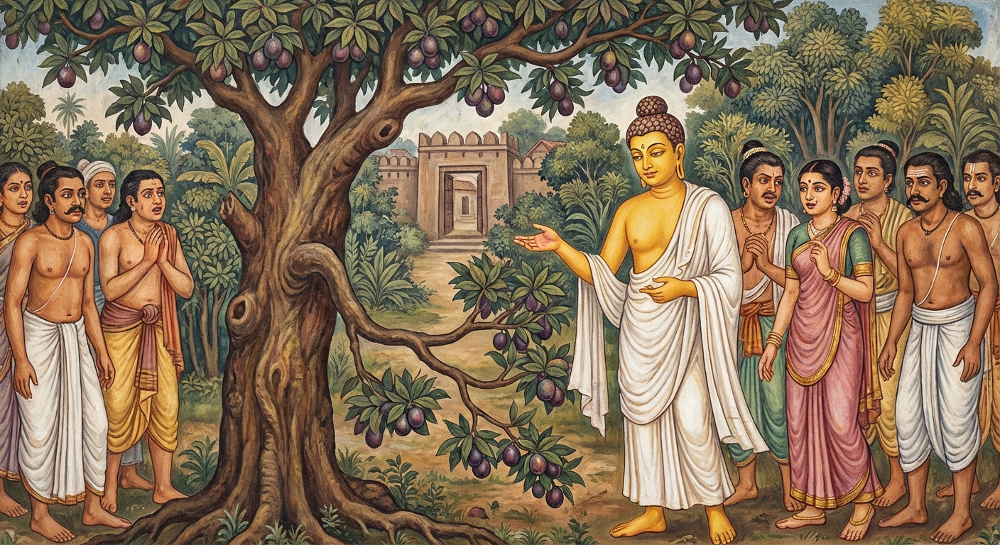

4. කිංඵල ජාතකය (54)
“නායං රුක්ඛො දුරාරුහො” (මේ ගසට නැඟීම අපහසු නොවේ) යන මේ ජාතක කතාව ශාස්තෘන් වහන්සේ ජේතවනාරාමයේ වැඩ වසන සමයෙහි, පලතුරු හඳුනාගැනීමෙහි දක්ෂ වූ එක්තරා උපාසකයෙකු අරබයා දේශනා කළ සේක. සැවැත් නුවර වැසි එක්තරා කෙළෙඹි පුත්රයෙක් බුදුරජාණන් වහන්සේ ප්රමුඛ මහා සංඝරත්නයට ආරාධනා කොට, තම ආරාමයෙහි වඩා හිඳුවා, කැඳ කැවිලි පූජා කර උයන්පල්ලාට අණ කරමින්; “භික්ෂූන් වහන්සේලා සමඟ උයනෙහි ඇවිද ස්වාමීන් වහන්සේලාට අඹ ආදී නානාප්රකාර පලතුරු ලබා දෙන්න” යැයි පැවසීය. ඔහු ද “එසේය” යි පිළිගෙන භික්ෂු සංඝයා කැටුව උයනෙහි ඇවිදින අතරතුර ගස දෙස බලාම; “මේ ගෙඩිය අමුයි, මෙය හොඳින් ඉදී නැහැ, මෙය හොඳින් ඉදී ඇතැ” යි හඳුනා ගනී. ඔහු යමක් කියයි නම් එය එසේම වෙයි. භික්ෂූන් වහන්සේලා ගොස් මේ බව තථාගතයන් වහන්සේට දැන්වූහ. “ස්වාමීනි, මේ උයන්පල්ලා පලතුරු හඳුනාගැනීමෙහි දක්ෂයෙකි. බිම සිටම ගස දෙස බලා ‘මේ ගෙඩිය අමුයි, මෙය හොඳින් ඉදී නැහැ, මෙය හොඳින් ඉදී ඇතැ’ යි දැන ගනී. ඔහු යමක් කියයි නම් එය එසේම වෙයි.” එවිට ශාස්තෘන් වහන්සේ; “මහණෙනි, මේ උයන්පල්ලා පලතුරු පිළිබඳ දක්ෂයකු වූයේ දැන් පමණක් නොවේ, පෙර නුවණැත්තෝ ද පලතුරු පිළිබඳ දක්ෂයෝ වූහ” යි වදාරා අතීත කතාව ගෙනහැර දැක්වූ සේක.
අතීතයෙහි බරණැස් නුවර බ්රහ්මදත්ත රජු රාජ්ය කරන කල්හි බෝධිසත්වයෝ සාත්තුනායක කුලයෙහි ඉපිද, වැඩිවියට පත්ව ගැල් පන්සියයක් සමඟ වෙළෙඳාම් කරමින් සිටියහ. එක් කාලයක එතුමා මහා වනයක් මැදින් වැටී තිබූ මාර්ගයකට (මහාවත්තනි අටවි) පැමිණ, වනයට ඇතුල් වන තැනදීම සියලු මිනිසුන් රැස් කරවා මෙසේ අවවාද කළහ: “මේ වනයෙහි විෂ වෘක්ෂයන් ඇත. ඒවායේ;
- විෂ සහිත කොළ ද,
- විෂ සහිත මල් ද,
- විෂ සහිත ගෙඩි ද,
- විෂ සහිත මී පැණි ද ඇත්තේමය.
එබැවින් පෙර ඔබ විසින් පරිභෝජනය නොකරන ලද යම් කොළයක්, මලක්, ගෙඩියක් හෝ දල්ලක් මා විචාරන්නේ නැතිව නොකෑ යුතුය.” ඔවුහු “යහපතැ” යි පිළිගෙන වනයට පිවිසියහ. ඒ වනයට ඇතුල් වන තැනම එක්තරා ගමක් අසල ‘කිම්ඵල’ නම් ගසක් විය. ඒ ගසෙහි කඳ, අතු, කොළ, මල් සහ ගෙඩි යන සියල්ලම අඹ ගසකට සමානය. වර්ණයෙන් හා හැඩයෙන් පමණක් නොව, ගන්ධයෙන් හා රසයෙන් ද එහි අමු සහ ඉදුණු ගෙඩි අඹ ගෙඩි හා සමානමය. එහෙත් ඒවා කෑ විට හලාහල විෂයක් මෙන් එම මොහොතේම ජීවිතය විනාශ කර දමයි. පෙරටුව ගිය ඇතැම් කෑදර මිනිස්සු “මේ අඹ ගසකැ” යි සිතා ගෙඩි කෑහ. ඇතැම්හු “සාත්තුනායකයාගෙන් අසා කන්නෙමු” යි ගෙඩි අතින් ගෙන සිටියහ. සාත්තුනායකයා පැමිණි විට ඔවුහු; “ස්වාමීනි, අපි මේ අඹ ගෙඩි කමුදැ” යි ඇසූහ. බෝධිසත්වයෝ “මෙය අඹ ගසක් නොවේ” යැයි දැන; “මේ වනාහි කිම්ඵල නම් වෘක්ෂයකි. මෙය අඹ ගසක් නොවේ, නොකන්න” යැයි ඔවුන් වැළැක්වූහ. යම් පිරිසක් ඒ වන විටත් කා තිබුණේ ද, ඔවුන්ට වමනය කරවා, කහ, සීනි, මී පැණි, ගිතෙල් මිශ්ර ඖෂධ (චතුමධුර) පොවා නිරෝගී කළහ.
මීට පෙර ද මිනිස්සු මේ ගස මුල නවාතැන් ගෙන “මේවා අඹ ගෙඩි” යැයි සිතා මේ විෂ ගෙඩි කා මරණයට පත්වෙති. පසු දින ගම්වාසීහු පැමිණ, මළ මිනිසුන් දැක, ඔවුන්ගේ පාදවලින් අල්ලා රහසිගත තැනක දමා, ඔවුන් සතු සියල්ල ගැල් සමඟම රැගෙන යති. එදින ද ඒ මිනිස්සු අරුණෝදය වේලෙහිම; “මට ගොනුන් ලැබෙයි, මට ගැල් ලැබෙයි, මට බඩු බාහිරාදිය ලැබෙයි” යැයි සිතමින් වේගයෙන් ඒ ගස මුලට පැමිණියහ. නමුත් එහි නිරෝගීව සිටි මිනිසුන් දැක; “ඔබලා මේ ගස අඹ ගසක් නොවන බව දැනගත්තේ කෙසේදැ?” යි ඇසූහ. ඔවුහු, “අපි නොදනිමු, අපගේ ප්රධාන සාත්තුනායකතුමා දනී” යැයි පැවසූහ. එවිට ගම්වාසීහු බෝධිසත්වයන්ගෙන්; “පණ්ඩිතයෙනි, කුමක් නිසා ඔබ මේ ගස අඹ ගසක් නොවන බව දැන ගත්තෙහිදැ?” යි විමසූහ. ඔහු, “කරුණු දෙකකින් එය දැන ගතිමි” යි පවසා මේ ගාථාව වදාළහ.

“මේ ගසට නැඟීම අපහසු නොවේ. ගමට දුරින් පිහිටියා ද නොවේ. මෙම කරුණු හේතුවෙන්, මෙය රසවත් පලතුරු ඇති ගසක් නොවන බව මම දනිමි.”
එහි “නායං රුක්ඛො දුරාරුහො” යනු, මේ විෂ වෘක්ෂය නැඟීමට අපහසු එකක් නොවේ, ඔසවා තබන ලද ඉනිමගක් මෙන් පහසුවෙන් නැඟිය හැකි බව කියයි. “නපි ගාමතො ආරකා” යනු, ගමට දුරින් පිහිටියා ද නොවේ, ගම් දොරකම පිහිටියේ යැයි දක්වයි. “ආකාරණෙන ජානාමි” යනු, මේ කරුණු දෙක නිසා මම මේ ගස ගැන දනිමි. ඒ කෙසේද යත්? “නායං සාදුඵලො දුමො” යනුයි. එනම්, ඉදින් මෙය මිහිරි පලතුරු ඇති අඹ ගසක් වී නම්, මෙසේ සුවසේ නැඟිය හැකි, ගම ආසන්නයේ පිහිටි මේ ගසෙහි එක ගෙඩියක්වත් ඉතිරි නොවන්නේය. පලතුරු කන මිනිසුන්ගෙන් නිතර ගැවසී ගත්තේ වන්නේය. මෙසේ මම මාගේ ඥානයෙන් විමසා බලා මෙය විෂ වෘක්ෂයක් බව දැන ගතිමි. මෙසේ බෝධිසත්වයෝ මහාජනයාට ධර්මය දේශනා කර (ගමනාන්තය දක්වා) යහපතින් ගමන් කළහ.
බුදුරජාණන් වහන්සේ ද, “මහණෙනි, මේ ආකාරයෙන් පෙර නුවණැත්තෝ ද පලතුරු හඳුනාගැනීමෙහි දක්ෂයෝ වූහ” යි මේ ධර්ම දේශනාව ගෙනහැර දක්වා, පූර්වාපර සන්ධි ගළපා ජාතකය සමාප්ත කළ සේක. “එකල පිරිස බුදු පිරිස වූහ. සාත්තුනායකයා වූයේ මම ම වෙමි.”
සිව්වන වූ කිංඵල ජාතක වර්ණනාවයි.